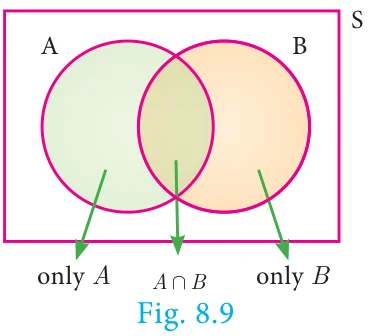

8.6 Addition Theorem of Probability
- If \(A\) and \(B\) are any two events then
\(P(A \cup B) = P(A) + P(B) - P(A \cap B)\)
- If \(A, B\) and \(C\) are any three events then
\(P(A \cup B \cup C) = P(A) + P(B) + P(C) - P(A \cap B) - P(B \cap C) - P(A \cap C) + P(A \cap B \cap C)\)
Proof
(i) Let \(A\) and \(B\) be any two events of a random experiment with sample space \(S\).
From the Venn diagram, we have the events only \(A\), \(A \cap B\) and only \(B\) are mutually exclusive and their union is \(A \cup B\)
\[\begin{aligned} \text{Therefore, } P(A \cup B) &= P[(\text{only } A) \cup (A \cap B) \cup (\text{only } B)] \\ &= P(\text{only } A) + P(A \cap B) + P(\text{only } B) \\ &= [P(A) - P(A \cap B)] + P(A \cap B) + [P(B) - P(A \cap B)] \\ P(A \cup B) &= P(A) + P(B) - P(A \cap B) \end{aligned}\]
(ii) Let \(A, B, C\) are any three events of a random experiment with sample space \(S\).

\[\begin{aligned} \text{Let} \quad D &= B \cup C \\ P(A \cup B \cup C) &= P(A \cup D) \\ &= P(A) + P(D) - P(A \cap D) \\ &= P(A) + P(B \cup C) - P[A \cap (B \cup C)] \\ &= P(A) + P(B) + P(C) - P(B \cap C) - P[(A \cap B) \cup (A \cap C)] \\ &= P(A) + P(B) + P(C) - P(B \cap C) - P(A \cap B) - P(A \cap C) + P[(A \cap B) \cap (A \cap C)] \\ P(A \cup B \cup C) &= P(A) + P(B) + P(C) - P(A \cap B) - P(B \cap C) - P(C \cap A) + P(A \cap B \cap C) \end{aligned}\]
Activity 5
The addition theorem of probability can be written easily using the following way.
\(P(A \cup B) = S_1 - S_2\)
\(P(A \cup B \cup C) = S_1 - S_2 + S_3\)
Where \(S_1 \rightarrow\) Sum of probability of events taken one at a time.
\(S_2 \rightarrow\) Sum of probability of events taken two at a time.
\(S_3 \rightarrow\) Sum of probability of events taken three at a time.
\(P(A \cup B) = \underbrace{P(A) + P(B)}_{S_1}\ \underbrace{-P(A \cap B)}_{S_2}\)
\(P(A \cup B \cup C) = \underbrace{P(A) + P(B) + P(C)}_{S_1}\ \underbrace{-(P(A \cap B) + P(B \cap C) + P(A \cap C))}_{S_2}\ \underbrace{+P(A \cap B \cap C)}_{S_3}\)
Find the probability of \(P(A \cup B \cup C \cup D)\) using the above way. Can you find a pattern for the number of terms in the formula?
Example 8.25
If \(P(A) = 0.37,\ P(B) = 0.42,\ P(A \cap B) = 0.09\) then find \(P(A \cup B)\).
Solution
\(P(A) = 0.37,\ P(B) = 0.42,\ P(A \cap B) = 0.09\)
\[\begin{aligned} P(A \cup B) &= P(A) + P(B) - P(A \cap B) \\ P(A \cup B) &= 0.37 + 0.42 - 0.09 = 0.7 \end{aligned}\]
Example 8.26
A flower is selected at random from a basket containing 80 yellow, 70 red and 50 white flowers. Find the probability of selecting a yellow or red flower?
Solution
Total number of flowers \(n(S) = 80 + 70 + 50 = 200\)
No. of yellow flowers \(n(Y) = 80 \ \therefore P(Y) = \dfrac{n(Y)}{n(S)} = \dfrac{80}{200}\)
No. of red flowers \(n(R) = 70 \ \therefore P(R) = \dfrac{n(R)}{n(S)} = \dfrac{70}{200}\)
Y and R are mutually exclusive \(P(Y \cup R) = P(Y) + P(R)\)
Probability of drawing either a yellow or red flower
\(P(Y \cup R) = \dfrac{80}{200} + \dfrac{70}{200} = \dfrac{150}{200} = \dfrac{3}{4}\)
Thinking Corner
\(P(A \cup B) + P(A \cap B)\) is _____.
Example 8.27
Two dice are rolled together. Find the probability of getting a doublet or sum of faces as 4.
Solution
When two dice are rolled together, there will be \(6 \times 6 = 36\) outcomes. Let \(S\) be the sample space. Then \(n(S) = 36\)
Let \(A\) be the event of getting a doublet and \(B\) be the event of getting face sum 4.
\[\begin{aligned} \text{Then} \quad A &= \{(1,1), (2,2), (3,3), (4,4), (5,5), (6,6)\} \\ B &= \{(1,3), (2,2), (3,1)\} \\ \therefore \ A \cap B &= \{(2,2)\} \end{aligned}\]
Then, \(n(A) = 6,\ n(B) = 3,\ n(A \cap B) = 1\).
\[\begin{aligned} P(A) &= \frac{n(A)}{n(S)} = \frac{6}{36} \\ P(B) &= \frac{n(B)}{n(S)} = \frac{3}{36} \\ P(A \cap B) &= \frac{n(A \cap B)}{n(S)} = \frac{1}{36} \end{aligned}\]
\(\therefore P\) (getting a doublet or a total of 4) \(= P(A \cup B)\)
\[\begin{aligned} P(A \cup B) &= P(A) + P(B) - P(A \cap B) \\ &= \frac{6}{36} + \frac{3}{36} - \frac{1}{36} = \frac{8}{36} = \frac{2}{9} \end{aligned}\]
Hence, the required probability is \(\dfrac{2}{9}\).
Example 8.28
If \(A\) and \(B\) are two events such that \(P(A) = \dfrac{1}{4},\ P(B) = \dfrac{1}{2}\) and \(P(A \text{ and } B) = \dfrac{1}{8}\), find (i) \(P(A \text{ or } B)\) (ii) \(P(\text{not } A \text{ and not } B)\).
Solution
\[\begin{aligned} \text{(i)} \quad P(A \text{ or } B) &= P(A \cup B) \\ &= P(A) + P(B) - P(A \cap B) \\ P(A \text{ or } B) &= \frac{1}{4} + \frac{1}{2} - \frac{1}{8} = \frac{5}{8} \\ \text{(ii)} \quad P(\text{not } A \text{ and not } B) &= P(\overline{A} \cap \overline{B}) \\ &= P(\overline{A \cup B}) \\ &= 1 - P(A \cup B) \\ P(\text{not } A \text{ and not } B) &= 1 - \frac{5}{8} = \frac{3}{8} \end{aligned}\]
Example 8.29
In an apartment, in selecting a house from door numbers 1 to 100 randomly, find the probability of getting the door number of the house to be an even number or a perfect square number or a perfect cube number
Solution
Total number of houses \(n(S) = 100\)
Let A be the event of getting door number even.
\(A = \{2, 4, 6, 8, \ldots, 100\}\)
\(n(A) = 50\)
\(P(A) = \dfrac{n(A)}{n(S)} = \dfrac{50}{100}\)
Let B be the event of getting door number perfect square.
\(B = \{1, 4, 9, 16, 25, 36, 49, 64, 81, 100\}\)
\(\therefore n(B) = 10\)
\(P(B) = \dfrac{n(B)}{n(S)} = \dfrac{10}{100}\)
Let C be the event of getting door number perfect cube.
\(C = \{1, 8, 27, 64\}\)
\(\therefore n(C) = 4\)
\(P(C) = \dfrac{n(C)}{n(S)} = \dfrac{4}{100}\)
\[\begin{aligned} P(A \cap B) &= P[\text{getting even perfect square number}] = \frac{5}{100} \\ P(B \cap C) &= P[\text{getting a perfect square and perfect cube number}] = \frac{2}{100} \\ P(A \cap C) &= P[\text{getting even perfect cube number}] = \frac{2}{100} \\ P(A \cap B \cap C) &= P[\text{getting even perfect square and perfect cube number}] = \frac{1}{100} \end{aligned}\]
Required probability
\[\begin{aligned} P(A \cup B \cup C) &= P(A) + P(B) + P(C) - P(A \cap B) - P(B \cap C) - P(A \cap C) + P(A \cap B \cap C) \\ &= \frac{50}{100} + \frac{10}{100} + \frac{4}{100} - \frac{5}{100} - \frac{2}{100} - \frac{2}{100} + \frac{1}{100} = \frac{65}{100} - \frac{9}{100} = \frac{56}{100} = \frac{14}{25} \end{aligned}\]
Example 8.30
In a class of 50 students, 28 opted for NCC, 30 opted for NSS and 18 opted both NCC and NSS. One of the students is selected at random. Find the probability that
- The student opted for NCC but not NSS.
- The student opted for NSS but not NCC.
- The student opted for exactly one of them.
Solution
Total number of students \(n(S) = 50\).
Let \(A\) and \(B\) be the events of students opted for NCC and NSS respectively.
\(n(A) = 28,\ n(B) = 30,\ n(A \cap B) = 18\)
\(P(A) = \dfrac{n(A)}{n(S)} = \dfrac{28}{50};\quad P(B) = \dfrac{n(B)}{n(S)} = \dfrac{30}{50}\)
\(P(A \cap B) = \dfrac{n(A \cap B)}{n(S)} = \dfrac{18}{50}\)
- Probability of the students opted for NCC but not NSS
\(P(A \cap \overline{B}) = P(A) - P(A \cap B) = \dfrac{28}{50} - \dfrac{18}{50} = \dfrac{1}{5}\)
- Probability of the students opted for NSS but not NCC.
\(P(\overline{A} \cap B) = P(B) - P(A \cap B) = \dfrac{30}{50} - \dfrac{18}{50} = \dfrac{6}{25}\)
- Probability of the students opted for exactly one of them
(Note that \((A \cap \overline{B}), (\overline{A} \cap B)\) are mutually exclusive events)
\(= P[(A \cap \overline{B}) \cup (\overline{A} \cap B)]\)
\(= P(A \cap \overline{B}) + P(\overline{A} \cap B) = \dfrac{1}{5} + \dfrac{6}{25} = \dfrac{11}{25}\)
Example 8.31
\(A\) and \(B\) are two candidates seeking admission to IIT. The probability that A getting selected is 0.5 and the probability that both \(A\) and \(B\) getting selected is 0.3. Prove that the probability of \(B\) being selected is atmost 0.8.
Solution
\(P(A) = 0.5,\ P(A \cap B) = 0.3\)
\[\begin{aligned} \text{We have} \quad P(A \cup B) &\le 1 \\ P(A) + P(B) - P(A \cap B) &\le 1 \\ 0.5 + P(B) - 0.3 &\le 1 \\ P(B) &\le 1 - 0.2 \\ P(B) &\le 0.8 \end{aligned}\]
Therefore, probability of \(B\) getting selected is atmost 0.8.